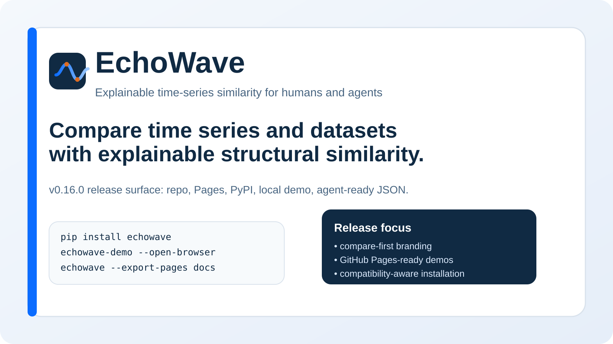

Compare time series and datasets with explainable structural similarity.
EchoWave compares time series and time-series datasets, explains why they match or differ, and emits compact JSON plus shareable HTML reports. The homepage is intentionally short. Tutorials, API material, and ecosystem detail now live in dedicated docs pages with a left sidebar.
Zipeng Wu
The University of Birmingham
zxw365@student.bham.ac.uk https://zipengwu365.github.io/EchoWave/
One homepage, separate documentation, and a clearer information hierarchy
This layout is closer to scikit-learn than to a single long landing page. The front page explains the product quickly; the docs area handles tutorials, API reference, scenarios, and ecosystem positioning with a persistent sidebar.
The first interaction should still be obvious
pip install echowave
python -c "import numpy as np; from echowave import compare_series; x=np.sin(np.linspace(0,8*np.pi,128)); y=np.sin(np.linspace(0,8*np.pi,128)+0.2); print(compare_series(x,y).to_summary_card_markdown())"# EchoWave similarity summary
overall similarity: ...
top components: shape similarity, trend similarity, spectral similarityOne strong example, then deeper material in docs
The homepage only needs enough proof to earn a click into the docs. It should not carry the whole manual.
# EchoWave similarity summary
**Compared:** OpenClaw-style candidate vs durable breakout analog
## Headline
These two inputs show **very high** similarity overall (score 0.992).
OpenClaw-style candidate and durable breakout analog are strongly similar overall. The best agreement appears in trend similarity and shape similarity.
## Most important similarity dimensions
| plain-language label | score |
|---|---:|
| trend similarity | 1.000 |
| shape similarity | 1.000 |
| dtw similarity | 0.997 |
| spectral similarity | 0.991 |
## Recommended next actions
- Plot both series after z-score normalization to show the shared shape without scale differences.
- Run rolling or windowed similarity if you expect the relationship to change over time.
- Use structural-profile similarity when scales, frequencies, or observation modes differ too much for raw-shape comparison.
- Inspect spectral or seasonality-aware models because the two series share rhythm strongly.Built to travel beyond the docs
Ask whether a new repo looks like a durable breakout or a short viral spike.
Ask which assets become more similar during macro or geopolitical stress.
Ask which load curves drift or switch regime under extreme weather.
Use the docs like a docs site, not like a landing page appendix
If you want tutorials, API detail, or ecosystem guidance, go to the left-sidebar docs area. That separation is what makes the site easier to scan and easier to trust.